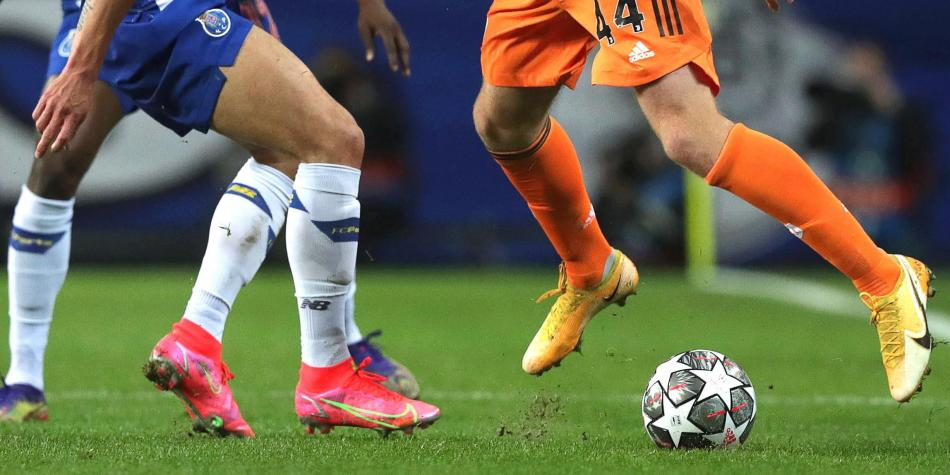
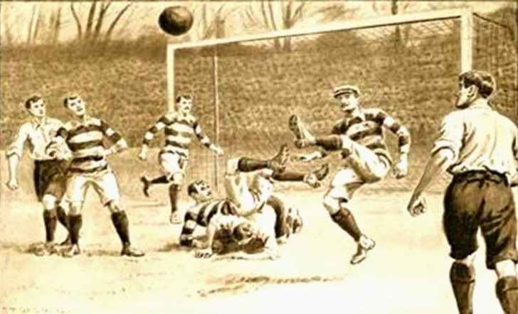

En este blog hablaremos a profundidad sobre el fútbol del viejo continente en los últimos 10
años, así
como sus mejores jugadores, entrenadores, selecciones, clubes, y Eurocopas. Cabe destacar
que nos
centraremos en lo mejor de lo mejor, para que de esta forma este blog solo éste lleno de
calidad y
de lo mejor del fútbol. No cabe duda que el mejor fútbol es el de Europa, ya que de allá
nace este
deporte y su calidad y disciplina se mantiene año con año, cuando nosotros vemos un partido
de fútbol
de Europa es una belleza y la forma en la que se plantean los partidos es simplemente única.
Desarrollo
Hablaremos de las diferentes competiciones que se han disputado y quienes han tenido el honor
de
portar esas medallas de oro y esas copas y trofeos que significan esfuerzo y disciplina, y
un gran
trabajo en equipo. Porque este deporte, que es el deporte más bello del mundo, nos da tantas
emociones
y sensaciones que no podemos describir con solo palabras.
Platicaremos también de esos momentos tan emocionantes que nos han hecho ponernos de pie y
gritar con
esperanza alentando a nuestro club favorito.
Todo esto y mucho más en este Blog de Fútbol de Europa, quédate un rato y acompáñame a
revivir estos
momentos juntos.
Motivación
Mi motivación, es que el fútbol es mi pasión y es lo que me gusta hacer en mis tiempos
libres, disfruto
mucho el ver un buen partido de Champions junto a mi papá o ver un partido de Eurocopa con
la Familia,
el fútbol nos une y crea muchos vínculos con personas incluso desconocidas.
Desde chico no me despego de un balón de fútbol, es algo que simplemente es parte de mi,
algo con
lo que me siento hecho por y para, recuerdo mucho ver los partidos de Champions y que al
ganar mi equipo
preferido, no poder contener mis lágrimas por algo tan épico y bello como una remontada, o
un partido que
se veía imposible de ganar.

Partido Fútbol Eliminatoria
Top 10 Jugadores de el 2021
15/10/21
10.MEMPHIS DEPAY
9.N'GOLO KANTÉ
8.KEVIN DE BRUYNE
7.KARIM BENZEMA
6.ROBERT LEWANDOWSKI
5.NEYMAR
4.ERLING HAALAND
3.KYLIAN MBAPPÉ
2.CRISTIANO RONALDO
1.LIONEL MESSI
Los mejores jugadores en los últimos 10 años
Sitios para
obtener más información
15/10/21
Remontada en el Camp Nou 6-1
Top 100 Jugadores de el 2020
20/11/21
En este video podemos contemplar a los 100 jugadroes más destacados de
este último
año,
así como algunos de sus mejores goles del año, también podremos notar que la calidad sube
entre
más veamos el video.
Cabe destacar que estos son los mejores jugadores actualmente, y más adelante en el blog
veremos a más jugadroes con técnicas inimaginables, pero de hace unos 25 años, ya que es
muy importante también conocer los jugadores que en su época fueron "los mejores".
Investigación
22/12/2021
El Origen del Fútbol
El fútbol fue un gran invento por parte de Inglaterra para abatir el aburrimiento de los
domingos.
Chesterton(escritor reconocido ingles )Aseguro que el futbol es una causa por la
cual
Inglaterra decide convertirse en una potencia colonial
Una explicación mas sencilla de el origen del futbol es la que nos da Bobby Charlton,
exfutbolista y reconocido como el mejor futbolista ingles de todos los tiempos,
Chesterton(escritor reconocido ingles )Los ingleses no inventaron el fútbol,
inventaron solamente sus reglas. Al futbol se ha jugado desde siempre.
Y es verdad que el futbol a existido desde siempre, pero no hay que negar que los ingleses
tuvieron esa inteligencia de
darle esas reglas tan maravillosas que hasta la fecha han requerido mínimos cambios .
Así mismo darle diferncia a otros deportes que también utilizan una pelota.
Fuera de quedar como un pasatiempo olvidado por la comunidad, fue un gran deporte que poco a
poco se popularizo por su gran éxito que
atraía a mucha gente. Los primeros partidos oficiales en Inglaterra fueron un rotundo éxito y
esto provoco que se popularizara en gran parte de la
Gran Bretaña e Irlanda. A finales de la década se crearon un total de 30 clubes en 1871 nació la
Challenge Cup que es hoy el torneo más antiguo del
mundo
Y así el fútbol y los torneos ingleses fueron tomando una estructura y poco a poco influenceando
a otros países de los alrededores como Escocia. Cabe destacar
que el 98% de las reglas se conservan desde su creación y la FIFA ha agregado un total de 6
reglas nuevas en 2020.
98%
Escocia e Inglaterra juagaron el primer partido internacional el 30 de noviembre de 1872 con
un total de 4,000 espectadores en un estadio Escocés
El resultado fue un decepcionante 0-0 y este partido se le reconoce como el nacimiento del
fútbol. Después de un par de años
el fútbol llego a Brasil, ahí comenzaron a realizar técnicas de regate. Es difícil creer que
los Ingleses crearon las reglas del
fútbol y aún así los esoceses tenían mucha superioridad sobre ellos. El fútbol se expandió
por todo el continente y se popularizo de forma
increíble, principalmente por lo emocionante y apasionante que resultaba este deporte para
los aficionados.

Nacimiento del fútbol en Inglaterra
Eventos Memorables e Importantes del Fútbol
Eurocopa
El nacimiento de la EuroCopa fue una consecuencia de el francés Henry Delaunay que fue el primer
presidente de la UEFA, el insistió que sería muy agradable para la afición una competencia entre
las naciones del Viejo Continente, tristemente él no logró ver su idea realizada, si no que fue
su hijo el que en 1960 dió inicio a esta gran competencia como sede Francia.
Alemania tiene la mayor cantidad de Copas de Europa en su exhibición. La selección alemana tiene
tres títulos, y España 2. En concreto, La Roja tiene potencial para ganar un tercer título
europeo consecutivo y hacer historia en este torneo, ya que ningún equipo ha sido capaz de ganar
la Copa de Europa tres veces seguidas.
Más de medio siglo de logros en la Copa de Europa han hecho innumerables récords. Desde los
mayores goles de Platini hasta los partidos con más espectadores.
México 1970
México 70 sin duda fue un mundial de altura, literalmente a 2,000 metros sobre el nivel del mar,
en horarios donde el sol era una gran desventaja ya que se eligió un horario en el que los
europeos pudieran ver a su selección representativa en un horario decente.
Algo que no se suele comentar de este mundial es que se pensaba como otro candidato de sede a
Argentina, pero México ofrecía mejores instalaciones deportivas e infraestructura olímpica.
La selección mexicana se llenó de valor y logró su máximo reconocimiento en 4tos de final ,
dando una buena imagen, la selección mexicana no pudo presumir el campeonato, pero sí de haber
cobijado los certámenes, había muchas rivalidades entre naciones y que decir de la clara
rivalidad entre América y Europa. Pero Brasil dejó a los otros países atrás con el campeonato y
levantando esa copa del mundo tan querida por todos.
El Origen de la Champions League
Cabe destacar que las 3 competiciones de fútbol más importantes se las debemos a los franceses ya
que ellos crearon el Mundial, la Eurocopa, y la Copa Campeón de Clubes.
El promotor de esta última fue Gabriel Hanot, que fue editor del diario deportivo francés
L ’ equipe, ya que el constantemente recibía preguntas sobre qué club era el mejor de Europa, y
el
decidió formar esta competición con el fin de destacar al mejor equipo de toda Europa por sus
jugadores, entrenador, y aficionados. Hasta la fecha esta competición es una de las más
emocionantes, importantes y conocidas a nivel mundial, el Real Madrid es el club con más
Champions ganadas con un total de 13 ediciones y el actual campeón de clubes es el Chelsea F.C
Cristiano Ronaldo en la Champions League
Origen del Fútbol
20/11/21
En este vídeo les explico un poco sobre el origen del fútbol, y
como fue que
este mismo se fue desarrollando a corto plazo.
Así como también las asociaciones que apoyaron a este hermoso deporte en el viejo
continente.
 Introducción
Introducción Top 10 Jugadores de el 2021
Top 10 Jugadores de el 2021 
 Sitios para
obtener más información
Sitios para
obtener más información
 Investigación
Investigación